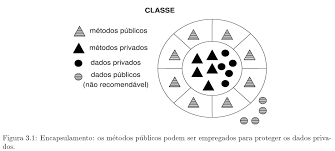
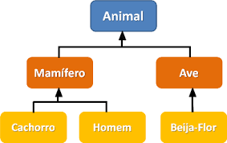
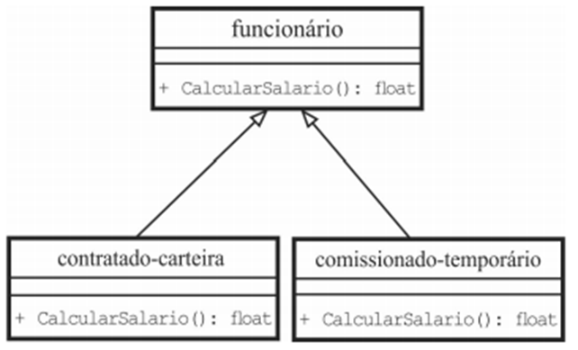

O Java é uma linguagem de programação orientada a objetos e é uma das linguagens mais utilizadas pelas empresas na atualidade no desenvolvimento de aplicações WEB e Mobile. O Java foi criado em 1995 na empresa Sun Microsystem por uma equipe chefiada por James Gosling, conhecido como o pai do Java. Em 2008, o Java foi adquirido pela Oracle e vem crescendo bastante desde então no mercado de tecnologia.
O Java, é uma linguagem de programação orientada a objetos, que também é tida como uma plataforma computacional de desenvolvimento cujo lançamento foi realizado em 1995 pela Sun Microsystem. Essa tecnologia possui muitas aplicações nos dias de hoje e é essencial para o funcionamento de grande parte dos sistemas modernos, um exemplo disso pode ser visto no próprio desenvolvimento web, onde grande parte dos sites não funcionariam, a menos que você possua o Java instalado. Uma das vantagens da linguagem, é a possibilidade de escrever o código apenas uma vez e rodá-lo em diferentes plataformas, tais como sites, computadores, datacenters, celulares, calculadoras, videogames e outros dispositivos.
Programação orientada a objetos (POO, ou OOP segundo as suas siglas em inglês) é um paradigma de programação baseado no conceito de "objetos", que podem conter dados na forma de campos, também conhecidos como atributos, e códigos, na forma de procedimentos, também conhecidos como métodos.
As duas bases da POO são os conceitos de classe e objeto, porém, dessas bases surgem outros conceitos extremamente importantes ao paradigma, também vistos como soluções de alguns problemas do paradigma de programação estruturada, sendo eles o encapsulamento, a herança, as interfaces e o polimorfismo.
O encapsulamento, é uma prática utilizada para previnir que os dados de uma aplicação sejam acessados de forma indevida pelos métodos do sistema. Para que o encapsulamento ocorra, é criada uma estrutura dentro da qual estão contidos os métodos que podem ser utilizados por qualquer classe, assim, evitando que inconsistências surjam no desenvolvimento de um sistema.
O princípio da interface é um fundamento da programação modular que, por sua vez, é precursora e parte da programação orientada a objeto. Na programação orientada a objeto, a interface de um objeto é a junção de uma série de métodos suportados por um objeto. Historicamente, as interfaces são derivadas dos arquivos de cabeçalho da Linguagem C (normalmente arquivos com extensão ".h") que separam o contexto sintático de um módulo (ou protótipos de funções) da sua implementação.
A herança é um princípio próprio à programação orientada a objetos (POO) que estabelece que, uma nova classe pode ser criada a partir da estrutura de uma classe já existente. Herança, termo também conhecido pelo nome, "subclasses", provém da subclasse, da classe recém-criada que contém atributos e métodos da qual deriva. A principal vantagem da herança de classes dentro da Programação Orientada a Objetos, é a capacidade de criar novos atributos e métodos para a subclasse, que se somam aos atributos e métodos herdados da classe "pai".
Polimorfismo é definido como um princípio a partir do qual as subclasses derivadas de uma única superclasse, são capazes de invocar os métodos que, embora apresentem a mesma assinatura, comportam-se de maneira diferente para cada uma das classes derivadas. O Polimorfismo é um recurso através do qual selecionamos as funcionalidades utilizadas de forma dinâmica, através de um programa durante a sua execução, ou seja, com o Polimorfismo, os mesmos atributos e objetos podem ser utilizados em objetos distintos, porém, com implementações distintas para cada um.
Neste curso apresentaremos os conceitos introdutórios do Java, suas características e funcionamento. Veremos também um exemplo prático utilizando o Java.
O objetivo deste curso básico de Java e Orientação a Objetos é apresentar os conceitos básicos da linguagem de programação Java e a orientação a objetos (OO), visando ensinar usuários leigos, com pouca experiência em linguagem de programação a trabalhar com a plataforma Java.
Aprenda a usar uma das linguagens mais populares no desenvolvimento back-end, mergulhe no paradigma da orientação a objetos e domine as principais bibliotecas do mundo Java.